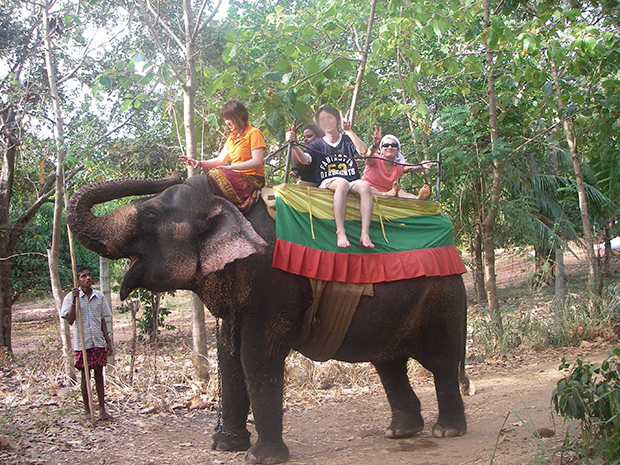
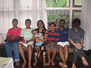
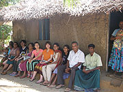
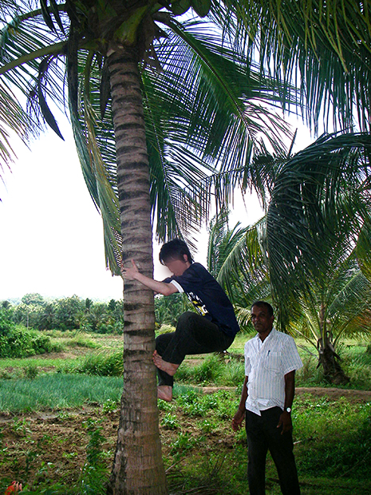
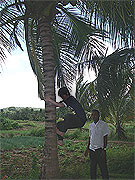

 乗り心地最高！ |
「この留学プログラムに特に不安や戸惑いはなく、紅茶、英語、安さの３つを満たしていたから参加しました。 ホームステイは、とても貴重な体験になったと思います。 |
ホストマザーは料理が上手で、ミルクティーはとってもおいしかったです。これは日本では味わえないおいしさですね。
特にべッティ（朝飲むミルクティー）が最高でした。
ホストファザーも、お姉さんもミルクティーを作ってくれましたが、お母さんのミルクティーが最高においしかったです。
ホストファミリーは僕にとても良くして下さり、満足しています。 |
 ホストファミリーの家族の方々と！ |
 低開発村視察 |
低開発村視察では、村の人が今何を望んでいるのか、子供は教育を受けているのか等、もう少し詳しく説明を聞きたかったのですが、質問をし忘れた僕も悪いです。 |
紅茶工場のボランティアでは、茶摘みや紅茶のテイスティングをしました。
現在、紅茶の仕事をしており、紅茶を勉強したかったのでとても良い経験になりました。
ゾウのボランティアでは、ゾウを洗ったり、餌をあげたり、ふんの掃除をしたり、ゾウにも乗せてもらいました。
観光では、きれいな滝を見たりと自然と触れ合えたのが一番良かったです。
ゾウもご機嫌「パオ～ン♪」 |
 こんなに深い水の中も平気！ |
スリランカへ行く前はもう少し貧しい生活を予想していたのですが、滞在したお宅は中流階級ということもあり、テレビ、冷蔵庫、DVDプレイヤーなど結構日本にあるものが家にあったので、少し驚きました。
それでもやはり、物を大切にする素朴なスリランカの人の生活を体験出来てよかったです。
スリランカの人は気持ちが熱くて情熱的、スリランカの文化に自信を持っていてすごいと思いました。
それに、女性はすごくきれいで、男性はかっこいい。
今回の滞在で、スリランカの長所・短所、日本の長所・短所が分かり勉強になりました。 （現地受入団体の）マーネルさんがとても親切だったので、満足しています。 |
 椰子の木登りってムズカシーッ！ |